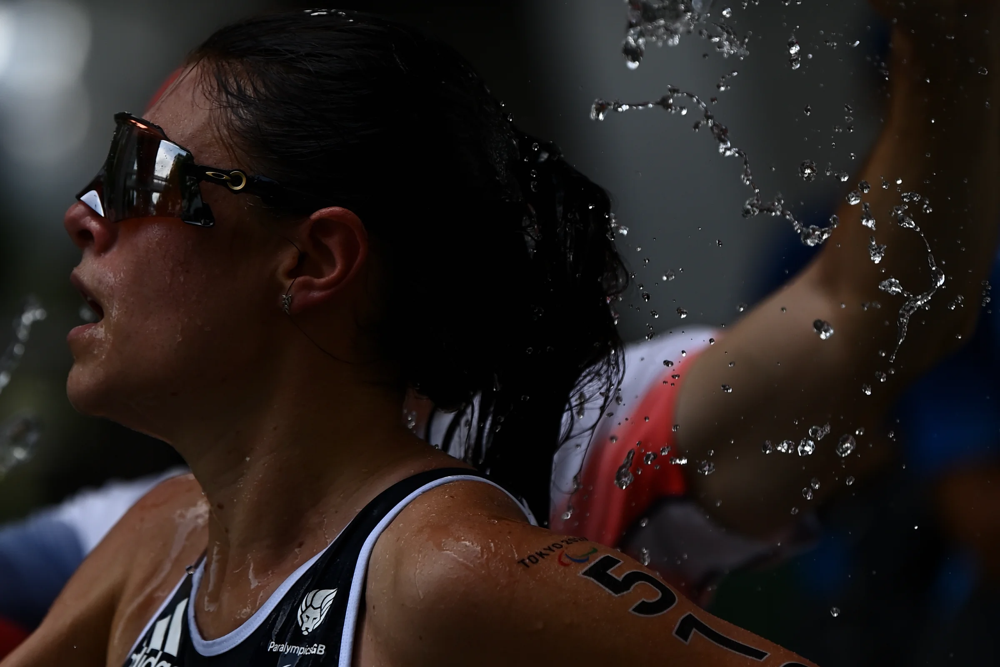

About
受賞歴のあるフォトグラフィー
完璧な瞬間を捉えることが私の情熱です。10年以上の経験を持つスポーツ写真家として、ストーリーを語る瞬間を捉えることを専門としています。日本スポーツ写真協会の会員として、私の作品は国内外で受賞し、高く評価されています。
作品を見るProfile
プロフィール
- JCII主催 水谷塾 入塾
- 同塾 卒業
- 2018 – 2021JPS展 入選
- JPS展 優秀賞
- 二科会 写真部 会友
- 現在一般社団法人 日本スポーツ写真協会 会員
- 現在日本ローイング協会 広報委員スタッフ